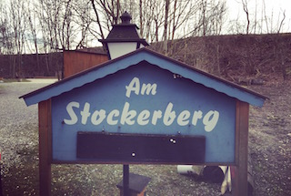

STANDESAMTLICHE TRAUUNG
Der Stockerberg liegt zwischen der Hausener Straße und Reutwaldstraße in Mauerstetten. Bitte beachtet: leider gibt es keine Adresse für Navigationsgeräte. Das nächstgelegene Haus befindet sich in der Hausener Straße 49, 87665 Mauerstetten.
Anfahrtsbeschreibung von München aus kommend
Fahrt auf die A96 in Richtung Lindau. An der
Ausfahrt 22 folgt ihr der B12 in Richtung Jengen/Kaufbeuren.
Dann nehmt ihr die Ausfahrt Kaufbeuren/Neugablonz/Mauerstetten und biegt im Kreisverkehr an der vierten Ausfahrt Richtung Mauerstetten ab.
Folgt der Neugablonzer Straße bis zum Ende und biegt dann rechts ab auf die Bahnhofstraße.
Die Bahnhofstraße wird irgendwann zur Hausener Straße und führt durch Mauerstetten durch.
Direkt hinter dem Ortsausgang von Mauerstetten seht ihr auf der linken Seite einen Wegweiser zum Stockerberg. Hier biegt ihr links ab, das Ziel befindet sich dann wenige Meter dahinter auf der rechten Seite.